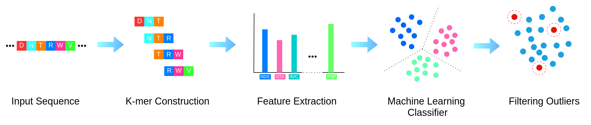

Background
The primary objective of comparative genomics is inferring attributes of an unknown gene by
comparing it with well-studied genes. In this regard, the notion of gene orthology plays a pivotal role
as the orthologous genes remain less diverged in the course of evolution. However, this task is often difficult,
slow, and idiosyncratic, especially in the presence of multiplicity of domains in proteins, evolutionary dynamics
(gene duplication, transfer, loss, introgression etc.), multiple paralogous genes, incomplete genome data, and for
distantly related species where similarity is hard to recognize.
Motivation
Advances in this domain have been mostly constrained to developing databases of genes so that a BLAST search
can be performed to estimate orthologous relationships or, to the other extreme, constructing a computationally
expensive phylogenetic tree to identify the gene duplications and speciations. There are usually some parameters
involved in these algorithms which are manually tuned and sets one method apart from the other. Machine Learning
based approaches show greater promises, but the existing works are too constrained.
In this work our motivation is to investigate how much information about gene orthology can be determined from the
gene sequence alone, using machine learning.
Methods
NORTH starts with breaking the input protein sequence of the gene into k-mers.
It uses the k-mer frequencies as the features, and uses multinomial Naive Bayes classifier with
the bag-of-words model to classify the input sequence into one of the predifined orthologous clusters.
Finally, it reports whether the gene is a member of the predifined orthologous clusters or an outlier.

NORTH Server
NORTH is accessible as a web interface with a server side application. Users can submit raw protein sequences or
FASTA files or UniProtIDs as input. Moreover, we provide the APIs to use our system programmatically.
The server can be accessed using the following button. We intend to continue updating the NORTH server application, with
more and more new genomic data.
A step-by-step tutorial is available at
open_in_new